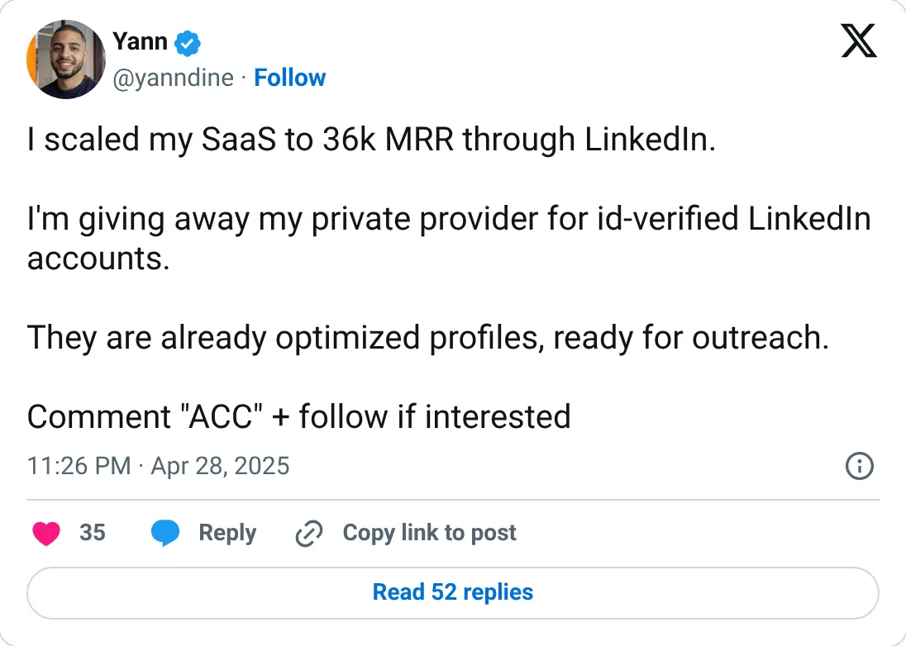
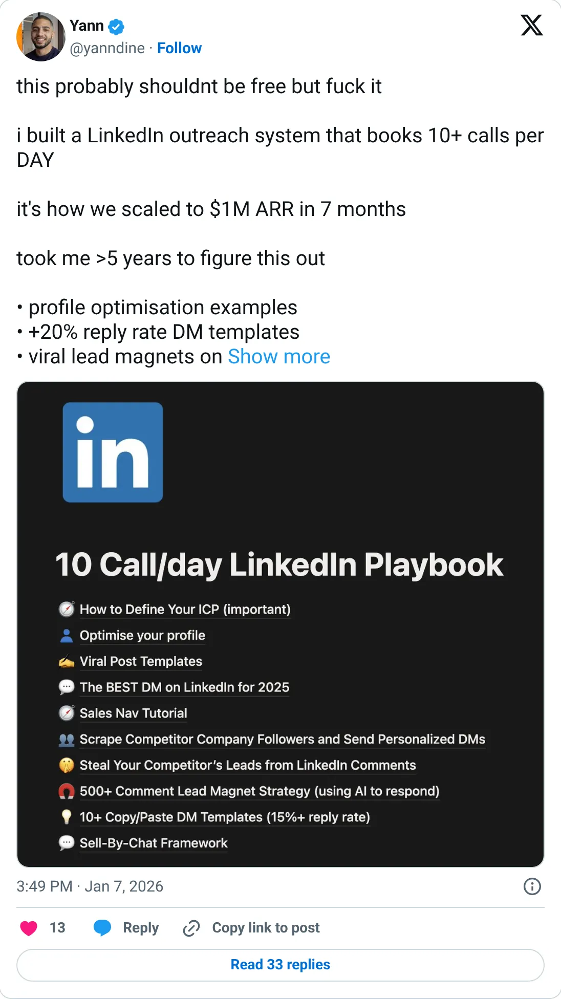

Not a pick
Prosp
A real-looking company with a headline you should not plan against.
$128,005 MRR (TrustMRR, synced Feb 2026)
Should you build this
The company may be real. The figure on the card is a peak, a stale year, a cash month, or an average. Prosp's headline is honest about its age: TrustMRR, $128,005 MRR, last sync February 5, 2026, all-time only $507K. That all-time figure is a quiet check on the MRR. A business doing $128K every month does not have $507K of lifetime revenue unless the MRR just arrived or the two numbers are not the same Stripe view. The founder's posts jump from $36K MRR to “$1M ARR in 7 months”, and the report says the feed mixes several ventures. Believe that a Stripe account read $128K in February. Don't believe it is October's revenue for one product.
Cited from the captured posts, shown below: the earliest captured post (Apr 28, 2025) is the source for “Scaled my SaaS to $36K MRR via LinkedIn”; the latest milestone (Jan 7, 2026) is the source for “Scaled to $1M ARR in 7 months”.
Posts this is based on

Scaled my SaaS to $36K MRR via LinkedIn
Open on X

Scaled to $1M ARR in 7 months
Open on X
What the product is
AI LinkedIn outreach automation: finds prospects and sends personalized connection requests, messages and voice notes.
⚠ The verified figure is stale (Stripe key expired Feb 2026). The founder's posts mix several ventures.